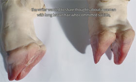

Now Eat My Script

Mounira al Solh – Lebanon 2014 – 24 min.
DOP: Karam Ghossein – E: Mounira al Solh, Belal Hibri, Clara Sfeir – P: Rez Visual
HD – English
"Now Eat My Script" is a precipice, a fluid solution in which some spectral noises of the self float adrift. Narration takes the role of a pregnant writer who continuously affirms her hunger and clumsiness towards language and history. Her body is crossed over by both the years to come and the stories that have been buried. As a would-be pirate, she navigates through the tumult of familiar waters.
A faltering, yet seemingly omniscient text roams among cities, and between memories that cannot find a proper place, or a proper fiction: After Eight chocolates, children’s group showers, a yellow car that resembles a Dodge, or a pigeon rock where men kill themselves become the phantom limbs of the sacrificed visceral body of speech and story telling that surrounds them. "Now Eat My Script" is about knowing disastrously. – Arnisa Zeqo
Monday 13/10 8.30 p.m. Werkstattkino
Mounira al Solh, born in 1978 Beirut. Studied Painting in Beirut and Fine Arts in Amsterdam. Editor at NOA Night of Artists magazine and initiator of NOA language school.
Films (selection): Rawane’s Song 2006 – Paris Without a Sey 2007-08 – Let’s Not Swim Then! 2008-09 – The Mute Tongue 2010 – Now Eat My Script 2014